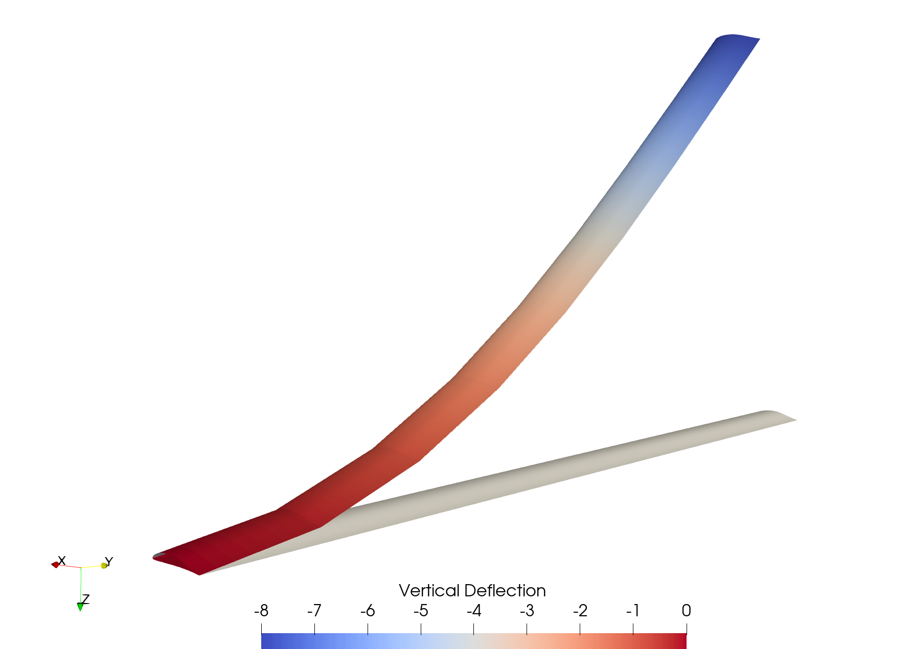

Steady State Aeroelastic Analysis of a Highly Flexible Wing
In this example, we demonstrate how to find steady state operating conditions for a highly flexible cantilever wing

This example is also available as a Jupyter notebook: cantilever.ipynb.
The wing we are considering in this example was created by modifying Daedalus aircraft data and is therefore representative of a high-altitude long-endurance wing. It has a 16 meter span (from root to tip) and a 1 meter chord. To model the wing's aerodynamics, we use a lifting line model. To model the wing's structure, we use a geometrically exact beam theory model.
using Aeroelasticity, GXBeam, NLsolve, LineSearches, LinearAlgebra
# --- Initial Setup --- #
# discretization
N = 8 # number of elements
# geometric properties
span = 16 # m
chord = 1 # m
xref = 0.5 # normalized reference location (from leading edge)
xcg = 0.5 # center of gravity (from leading edge)
# stiffness properties
GJ = 1e4 # N*m^2 (torsional rigidity)
EIyy = 2e4 # N*m^2 (flat bending rigidity)
EIzz = 4e6 # N*m^2 (chord bending rigidity)
# inertial properties
mu = 0.75 # kg/m (mass per unit length)
i11 = 0.1 # kg*m (moment of inertia about elastic axis)
i22 = 0.0375 # moment of inertia about beam y-axis
i33 = 0.0625 # moment of inertia about beam z-axis
# freestream properties
Vinf = 25.0 # m/s (velocity)
rho = 0.0889 # kg/m^3 (air density)
alpha = 10*pi/180 # angle of attack
c = 343.0 # m/s (air speed of sound)
beta = sqrt(1 - Vinf^2/c^2) # Prandtl-Glauert compressibility correction factor
# aerodynamic section properties
a = xref - 0.5 # normalized reference location (relative to semi-chord)
b = chord / 2 # m (semi-chord)
a0 = 2*pi # lift slope (for each section)
alpha0 = 0.0 # zero lift angle of attack (for each section)
cd0 = 0.01
cm0 = 0
# define geometry (assume NED coordinate frame)
xpt = range(0, 0, length=N+1) # point x-coordinates (in body frame)
ypt = range(0, span, length=N+1) # point y-coordinates (in body frame)
zpt = range(0, 0, length=N+1) # point z-coordinates (in body frame)
points = [[xpt[i],ypt[i],zpt[i]] for i = 1:N+1]
start = 1:N # starting point of each beam element
stop = 2:N+1 # ending point of each beam element
e1 = [0, 1, 0] # beam x-axis
e2 = [1, 0, 0] # beam y-axis
e3 = [0, 0, -1] # beam z-axis
frames = fill([e1 e2 e3], N) # local to body frame transformation
compliance = fill(Diagonal([0, 0, 0, 1/GJ, 1/EIyy, 1/EIzz]), N) # compliance matrix
mass = fill(Diagonal([mu, mu, mu, i11, i22, i33]), N) # mass matrix
assembly = GXBeam.Assembly(points, start, stop; frames, compliance, mass)
prescribed_conditions = Dict(
# fixed left edge
1 => GXBeam.PrescribedConditions(ux=0, uy=0, uz=0, theta_x=0, theta_y=0, theta_z=0),
)
# define GXBeam system
system = DynamicSystem(assembly)
# --- Define Submodels --- #
# construct section models (we use Peters' finite state model in this case)
section_models = fill(Peters{6}(), N)
# construct aerodynamic model
aerodynamic_model = LiftingLine(section_models)
# construct structural model
structural_model = GXBeamAssembly(system; structural_damping=false)
# define submodels
submodels = (aerodynamic_model, structural_model)
# --- Define Initial Parameters --- #
V = [-Vinf*cos(alpha), 0.0, -Vinf*sin(alpha)] # m/s (freestream velocity)
# define parameters for each lifting line section
section_parameters = fill([a, b, a0, alpha0, cd0, cm0], N)
# define parameters for the lifting line model
liftingline_parameters = LiftingLineParameters(section_parameters)
# define parameters for the geometrically exact beam theory model
gxbeam_parameters = GXBeamParameters(assembly)
# define parameters for the coupling
coupling_parameters = LiftingLineGXBeamParameters(V, rho, beta;
prescribed_conditions = prescribed_conditions,
gravity = [0, 0, 9.81])
# combine parameters
parameters = (liftingline_parameters, gxbeam_parameters, coupling_parameters)
# --- Define Coupled Model --- #
model = CoupledModel(submodels, parameters; symbolic=false)
# --- Perform Analysis --- #
# state rates equal to zero
dx = zeros(number_of_states(model))
# use previously defined parameters
p = parameters
# set time to zero
t = 0.0
# define residual function
f! = (resid, x) -> residual!(resid, model, dx, x, p, t)
# define jacobian function
j! = (jacob, x) -> state_jacobian!(jacob, model, dx, x, p, t)
# define initial guess
x0 = zeros(number_of_states(model))
# find steady state operating conditions
result = nlsolve(f!, j!, x0; method=:newton, linesearch=LineSearches.BackTracking())
# separate state variables into aerodynamic and structural states
λ, x = separate_states(result.zero, model)
# post-process the structural state
state = AssemblyState(x, system, assembly; prescribed_conditions)
# --- Visualize the Result --- #
# DAE-11 Airfoil
dae_11 = [
1.0 0.0
0.986283 0.0010768
0.969651 0.0023497
0.947994 0.0038679
0.920015 0.0056143
0.888329 0.007331
0.856562 0.0087586
0.824998 0.0099002
0.793421 0.0107738
0.761789 0.0113933
0.730101 0.0117728
0.698376 0.0119312
0.666635 0.0118657
0.634882 0.0115701
0.603112 0.0110455
0.571312 0.0102848
0.539469 0.0093041
0.507575 0.0081154
0.475605 0.0067337
0.443554 0.0052
0.411434 0.0035362
0.37924 0.0017525
0.346965 -0.0001193
0.314611 -0.0020681
0.282172 -0.0040608
0.249739 -0.0060686
0.21745 -0.0080524
0.185384 -0.0099672
0.153678 -0.011747
0.122584 -0.0132928
0.0926077 -0.0144625
0.0648951 -0.0150664
0.0414512 -0.0148893
0.0245731 -0.0138784
0.0141149 -0.0123747
0.0080862 -0.0107002
0.0044148 -0.0087908
0.0020116 -0.0064284
0.0004919 -0.003486
0.0 0.0
0.000757 0.0051431
0.0032916 0.0114678
0.0082926 0.0193346
0.016496 0.0287274
0.028364 0.0393002
0.0439665 0.0505399
0.0628794 0.0618045
0.0844076 0.0725648
0.107915 0.082517
0.132934 0.091527
0.159095 0.0995398
0.186118 0.106551
0.213791 0.112558
0.24194 0.117585
0.270425 0.121658
0.299149 0.124802
0.328056 0.127043
0.357092 0.128382
0.386183 0.12885
0.415255 0.128434
0.444274 0.127109
0.473223 0.124888
0.502047 0.121778
0.530681 0.117774
0.559141 0.112838
0.587581 0.106907
0.616266 0.0999911
0.645437 0.0922048
0.675223 0.0837204
0.705653 0.0747378
0.736604 0.0655023
0.767351 0.0564167
0.79778 0.0476052
0.82795 0.0391518
0.857951 0.0311284
0.887967 0.0235641
0.918609 0.0163798
0.947875 0.0100446
0.970008 0.0056151
0.986483 0.0025379
1.0 -0.0
]
sections = zeros(3, size(dae_11, 1), length(points))
sections[1,:,:] .= (xref .- dae_11[:,1]) * chord
sections[3,:,:] .= (-dae_11[:,2]) * chord
# visualize the result
write_vtk("cantilever-steady-undeformed", assembly; sections=sections)
write_vtk("cantilever-steady-deformed", assembly, state; sections=sections)This page was generated using Literate.jl.